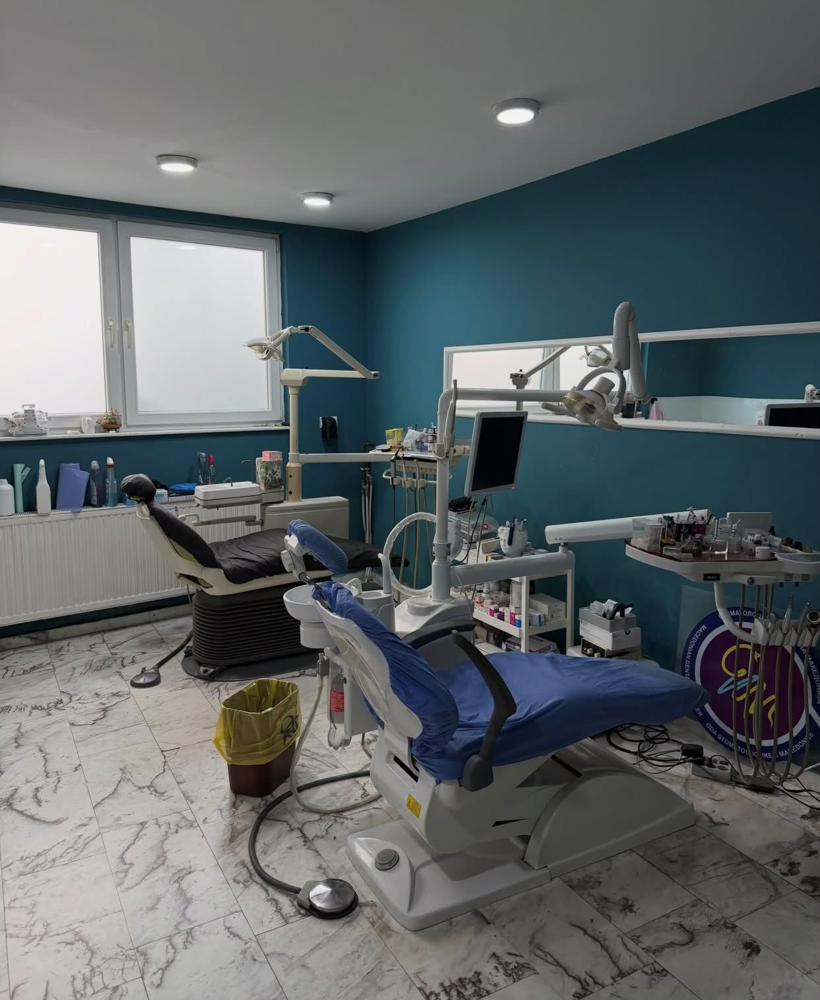
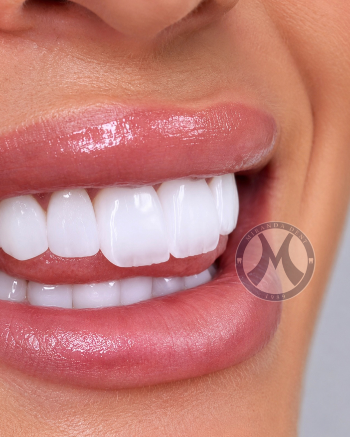

Miranda Dent u kujdeset për familjet në Tetovë që nga viti 1989 — një klinikë familjare ku kujdesi premium dhe pacienti kanë qenë gjithmonë në vend të parë.


Miranda Dent hapi dyert e saj në Tetovë në vitin 1989, si klinika e parë stomatologjike e regjistruar në qytet — dhe më shumë se tre dekada më vonë, ende drejtohet nga e njëjta familje që e themeloi.
Sot praktika udhëhiqet nga Dr. Florin Musliu, Dr. Ermira Musliu dhe Dr. Lorik Musliu, të cilët bashkojnë stomatologjinë e përgjithshme, ortodoncinë dhe kujdesin estetik nën një çati, me atë shërbim të kujdesshëm dhe personal që vetëm një klinikë familjare mund ta ofrojë.
Çdo plan trajtimi fillon njësoj: duke dëgjuar. Nga kontrolli i parë i një fëmije deri te puna komplekse restauruese, pacientët tanë janë gjithmonë në vend të parë — dhe kjo shihet nga sa gjatë qëndrojnë me ne.
Nga kontrollet rutinë deri te puna e avancuar restauruese, çdo trajtim ofrohet me të njëjtin standard premium, në shërbim të pacientit.
Kontrolle, pastrime dhe mbushje për t'i mbajtur dhëmbët tuaj të shëndetshëm afatgjatë.
Aparate dhe alinerë që drejtojnë dhëmbët dhe korrigjojnë kafshimin në çdo moshë.
Zbardhim, faseta dhe dizajn i buzëqeshjes për një rezultat të natyrshëm dhe të sigurt.
Kujdes i kujdesshëm endodontik që shpëton dhëmbët e dëmtuar dhe lehtëson dhimbjen te rrënja.
Stomatologji e butë dhe miqësore që i bën fëmijët të qetë që nga vizita e parë.
Kujdes i shpejtë për dhimbje të papritura, thyerje apo lëndime — kur keni më shumë nevojë për ne.
Një pasqyrë e detajuar e të gjitha trajtimeve që ofrojmë, të organizuara sipas kategorisë.
Tre mjekë, një standard i përbashkët kujdesi — i trashëguar dhe i praktikuar së bashku çdo ditë.
Stomatologji e përgjithshme dhe restauruese, me një qasje të qetë dhe të sigurt te karrigia.
Udhëheq planifikimin e trajtimeve të avancuara dhe specialistike në të gjithë klinikën.
I fokusuar në ortodonci dhe stomatologji estetike për një buzëqeshje të sigurt.
Përshtypje të vërteta nga familjet që kemi trajtuar në Tetovë.
"Shërbim i shkëlqyer. Staf shumë profesional."
"Përvoja më e mirë stomatologjike që kam pasur — e rekomandoj fuqimisht."
"I kujdesshëm, i vëmendshëm dhe i plotë — pikërisht ajo që kërkon nga një klinikë familjare."
Na kontaktoni me telefon, mesazh ose personalisht — ekipi ynë është gati t'ju ndihmojë.